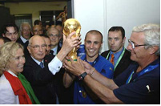

| привет участникам соревнований! | ||
| Футбо́л (от англ. foot — ступня, ball — мяч) — командный вид спорта, в котором целью является забить мяч в ворота соперника ногами или другими частями тела (кроме рук) большее количество раз, чем команда соперника. В настоящее время самый популярный и массовый вид спорта вмирее | ||
| Главное не победа, а участие! | ||